Week 2: Value-Based Methods
Screen Record
Recitation Slides
Recitation Notes
In this Recitation we will have a brief recap of What you've learnt so far. Let's dive in.
Contents
- Graphical Models
- Morkov Decision Process(MDP) and Markov Property
- Visualizing MDPs using Graphical Models
- Return(Sum of Rewards)
- State Value Function
- State-Action Value Function
- Policy Iteration
- Generalized Policy Iteration
- Value Iteration
- Exploration vs Exploitation
- ON Policy & OFF policy
- Sampling Methods
- Monte Carlo
- Sampling & Bootstrapping Methods
- N-Step TD
Graphical Models
-
Basically graphical model, also known as GM is a very usefull tool to Represent a graphical form of probabilistic relations betwen Random variables. Simply they are nothing but nodes and edges that are related through some probablity. Assume we have 3 random variable: \(x_1,x_2,x_3\) with the joint probability of \(P(x_1,x_2,x_3)\). Their GM will look like this:
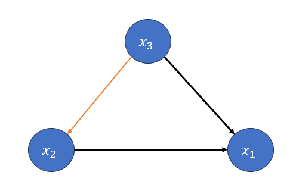
Where the Nodes are random varibales and edges define the relation between them.
But How is this actually drawn? Well Let's do it step by step.
Step 1: Draw the Random variables as Nodes.
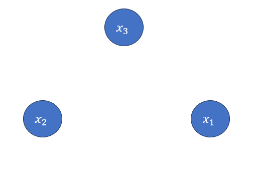
Step 2: Factorize \(P(x_1,x_2,x_3)\).
\(P(x_1,x_2,x_3) = 𝑃(𝑥_1 |𝑥_2,𝑥_3 )𝑃(𝑥_2,𝑥_3 )=𝑃(𝑥_1 |𝑥_2,𝑥_3 )𝑃(𝑥_2│𝑥_3 )𝑃(𝑥_3)\)
Step 3: From now we will draw the graph based on the factorized probabilty.
\(𝑃(𝑥_1 |𝑥_2,𝑥_3 )\) means that \(x_1\) conditioned on both \(𝑥_2,𝑥_3\). to show that we draw an edge from both \(𝑥_2,𝑥_3\) to \(𝑥_1\).
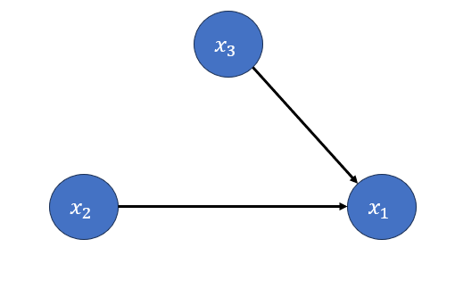
Step 4:
\(𝑃(𝑥_2│𝑥_3 )\) means that \(x_2\) is conditioned on \(x_3\) so draw an edge from \(x_3\) to \(x_2\).
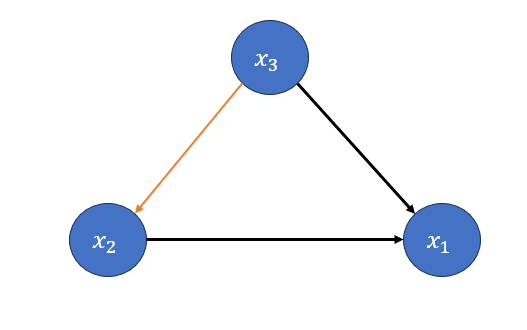
congratulation. Just like that We draw the GM of \(P(x_1,x_2,x_3)\). But we're not done yet.
What if \(x_1\) is independent of \(x_2\) given \(x_3\)? What does that lead to?
the independence \(x_1\) and \(x_2\) given \(x_3\) means that \(𝑃(𝑥_1 |𝑥_2) = 0\), since \(x_1\) and \(x_2\) are seperated from the beginning
their conditional probabilty is zero. to express that on the graph, we just erase the edge, indicating their relation, meaning that they don't have anything to do with each other! So we have this:
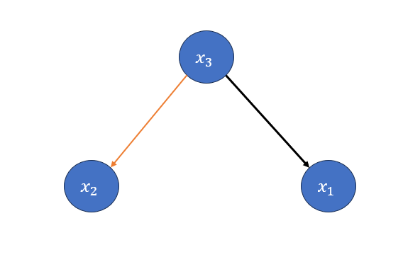
Morkov Decision Process (MDP) and Markov Property
- We model our Reinforcement Learning Problems with MDPs.variable
-
To do that we divide our problem into some random variable, a simplified MDP consists of State, Action, Next State and Reward. our Agents current situation or location is called State, at each state agent takes a certain action. taking the action, agent moves to a new state, which we call Next state, Then receive a Reward based on how good and appropriate action and next state are.
-
An MDP has a key property called Markov Property, Stating that an agent's Next state Only Depends on its Current State and not anything else.
Why did I menitioned it at all? as I said we model RL tasks using MDP so it's worthy to know how to draw their GM.
Visualizing MDPs using Graphical Models
- Let's say We have an agent. it's spawned at a state denoted as \(s_0\), takes the action \(a_0\), and moves to \(s_1\), then takes the action \(a_1\) and goes to \(s_2\). Wait a minute!! what did happen to Reward? Well receiving a reward is may or may not happed but the point is that here we assumed reward as a deterministic variable not random (doesn’t have a probabilistic distribution)
the joint Probability and factorized form: \(𝑃(𝑠_0,𝑎_0,𝑠_1,𝑎_1,𝑠_2 )=𝑃(𝑠_2| 𝑠_0,𝑎_0,𝑠_1,𝑎_1)𝑃(𝑎_1│𝑠_0,𝑎_0,𝑠_1 )𝑃(𝑠_1│𝑠_0,𝑎_0 )𝑃(𝑎_0 |𝑠_0)P(𝑠_0)\)
As I mentioned befor, MDP has Morkov property which means I can rewrite some of the terms: \(s_2\) only depends on \(s_1\) and \(a_1\) and not \(s_0\) and \(a_0\) due to the fact that they belong to the past. Thus we have, \(𝑃(𝑠_2|𝑠_0,𝑎_0,𝑠_1,𝑎_1) = 𝑃(𝑠_2 | 𝑠_1,𝑎_1)\), Also in \(𝑃(𝑎_1│𝑠_0,𝑎_0,𝑠_1)\), \(a_1\) only depends on the current state \(s_1\) and not \(𝑠_0, 𝑎_0\), again we can write: \(𝑃(𝑎_1│𝑠_0,𝑎_0,𝑠_1 )=𝑃(𝑎_1│ 𝑠_1 )\)
after doing the simplifications we get:
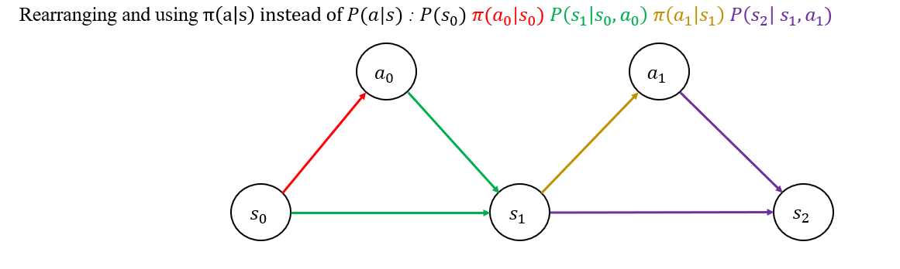
Return (Sum of Rewards)
As indicated in the headline Return means sum of rewards over an episode. in mathematic terms:
\(R(\tau) = r_1 + \gamma^{1}r_2 + \gamma^{2}r_3 + ... + \gamma^{T-1}r_{T}\) where \(\tau\) shows a whole trajectory starting from t=0 and T time step, episode ends.
and if we aim to show the return blongs to certain a time step, then we have:
\(R_t = r_{t+1} + \gamma^{1}r_{t+2} + \gamma^{2}r_{t+3} + ... + \gamma^{t+T-1}r_{t+T}\)
Another notation for \(R(\tau)\) is \(G\) and for \(R_t\) is \(G_t\)
We can also calculate the return in a recursive form:
\(G_t = r_{t+1} + \gamma^{1}r_{t+2} + \gamma^{2}r_{t+3} + \gamma^{3}r_{t+4} +... + \gamma^{t+T-1}r_{t+T}=\) \(r_{t+1} + \gamma[r_{t+2} + \gamma^{1}r_{t+3} + \gamma^{2}r_{t+4} +... ]=\)
\(r_{t+1} + \gamma \cdot G_{t+1}\)
State Value Function
- State value function is a measurement, indicating How good a state is among other states in an environment. You may ask How can a state be better or worse than the others? and How do we quanitize it? if you look at the following figure, you can see me on a frozen lake which is divided into cells.
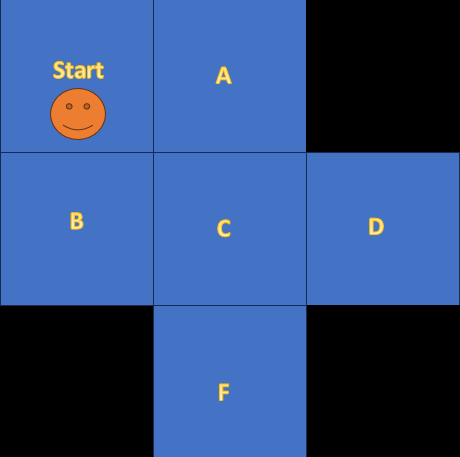
the black cells have weak ice, so if I step on them, they break and I die. as you know ice is slippery, so I might slip any moment and go into the wrong direction!! I am litterally Stuck, and let's say I can't go out unless a Helicopter helps me. Considering this fact, if we assume the best cell is the safest. Which one is the best and which one is the worst cell?
Obviously the cell "C" is the safest because even if I slip, I still have one more chance. But F and D are the worst, I have 3 cells around me, but 2 of them have weak ice. So Any mistake can get me killed.
Fair enough. But how do we actually measure these State values? This formula helps us.

What does it say? the state value (a.k.a value) of a state is equal to expectation of the Returns w.r.t the taken Policy.
Example: In State A, With the probability of 0.8 we go right and 0.2 we go down. What is the value of state A?

In this trajectory assuming \(\gamma = 1\) the Return is as follow:
\(R(\tau_1) = 1 + 1 + 1 + 1 = 4\)
and in another one we got:
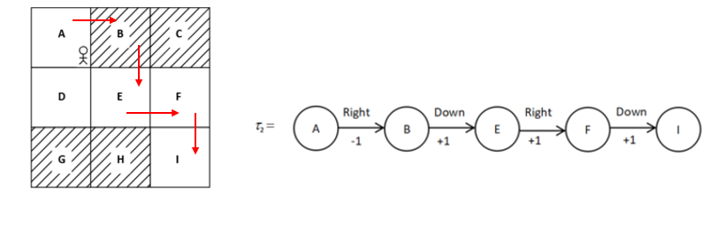
\(R(\tau_2) = -1 + 1 + 1 + 1 = 2\)
Now Let's Calculate the V(A)
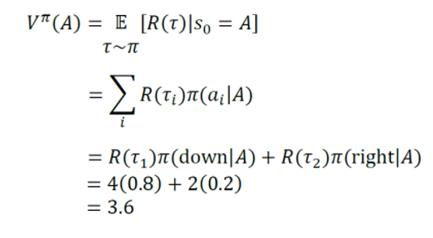
But how did we those trajectories and rewards? simple we actually took those actions, whether you're running a simulation or it's an actuall prototype, you have to try the trajectories. The more trajectory get tested the more percise values.
-
Heads up:
1-The calculated value is not necesserily fully percise, We only tested 2 trajectories, for a fully refined value, we need to try alot more trajectories.
2-There were so much simplification in this example, don't get confused if you faced a lot more calculation claiming to be value function.
State-Action Value Function
We talked about how to measure a state value, but let's be honest, that's not enough, knowing which state has higher value dosn't necesserily help us find our way. even in the worst situation there might be an action, helping us to success. so we move one step forward and calculate State-Action Values (a.k.a Q Values), this time we evaluate how good a certain action is, in a certain State.
\(Q(s,a) = \mathbb{E}_{\tau \sim \pi} [R(\tau) \mid S = s, A = a]\)
Looking at the equation, you realize there is a condition on both s and a meaning that, when taking the expectation the first state and actions are fixed but after taking them, feel free to do anything according to Policy \(\pi\), the expectation will cover for you. you can see an example in the next figure.
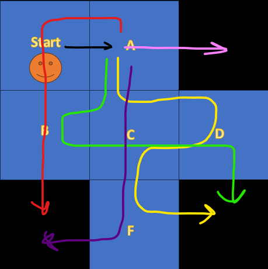
The Agent starts from the Start Cell and takes a fixed action to the Right but after that takes actions according to its Policy.
-
Heads up:
1-The calculated Q Value using this trajectories is not necesserily fully percise, We only tested few trajectories, for a fully refined state-action value, we need to try alot more trajectories.
2-There were so much simplification in this example, don't get confused if you faced a lot more complex interpretations and equations, claiming to be state-action value function.
3- The same strategy could be used for any other state-action pair.
Summary


Bellman equations
State Value Function
In a Very simplified situation, where The Environment is not Stochastic and Agent's Policy is deterministic, We can Write the Value function as follows:
\(𝑉(𝑠)=𝑅(𝑠,𝑎,𝑠^′)+\gamma \cdot𝑉(𝑠^′)\) Which is Called Bellman Equation for V.
For example for the following MDP:
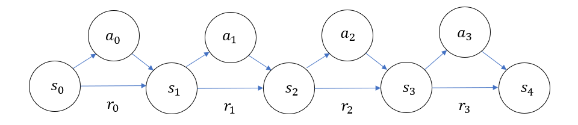
Here instead of assigning a specific node to reward we wrote it on the edge.
We have: \(𝑉(s_2)=𝑅(𝑠_2,𝑎_2,𝑠_3)+\gamma \cdot𝑉(𝑠_3) \rightarrow 𝑉(s_2)=r_2 +\gamma \cdot𝑉(𝑠_3)\)
But as I mentioned this is a very simplified MDP, But I guess it's a great time to add some stochasticity to the Environment!
When the Environment is stochastic, there is always a chance that you miss even if you're policy is clear like day light to you.
for example consider the frozen lake I got stuck in.
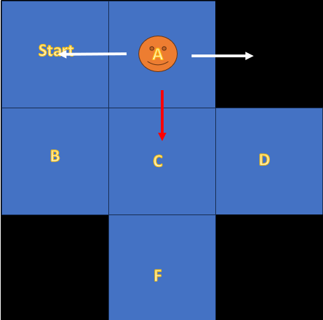
when I am at state D the obvious choice is to stay where I am or move to Left. But the lake surface is slippery, Despite my intention to move to the left.
I may slip and go up or down! this is the Stochacity I'm talking about. in Probabilty We model it as \(𝑃(s'|s,a)\)
If the environment is stochastic, we must take account for it. to make that happen We add an Expectaion to the previous Equation.
\(𝑉^𝜋 (𝑠)=\sum_{𝑠'}𝑃(𝑠' |𝑠,𝑎)[𝑅(𝑠,𝑎,𝑠^′ )+\gamma \cdot 𝑉^𝜋 (𝑠^′ )]\)
In the frozen lake, Assume I only can move in the direction of the intended action, or the sides but I never go backward. For example Let's Say I am at state A and want to go downward. what is the value of A?
\(𝑉^𝜋 (𝑠)=𝑃(Start |A,down)[𝑅(A,down,Start )+\gamma \cdot 𝑉^𝜋 (Start)]\) \(+ 𝑃(C |A,down)[𝑅(A,down,C )+\gamma \cdot 𝑉^𝜋 (C)]\) \(+ 𝑃(Black |A,down)[𝑅(A,down,Black )+\gamma \cdot 𝑉^𝜋 (Black)]\)
Another stochasticity we should be aware of, is Stochasticity of Policy. A policy is not always clear and deterministic, sometimes it's drawn from a probabilistic distribution. We model this as P(a|s). But instead of P notation, it's denoted \(\pi(a|s)\), meaning that given a certain state, there is even small possiblilty for each action to be taken.
To have the Bellman equation to account for \(\pi(a|s)\), We rewrite it as follows:
\(𝑉^𝜋 (𝑠)=\sum_{a}\pi(a|s)\sum_{𝑠'}𝑃(𝑠' |𝑠,𝑎)[𝑅(𝑠,𝑎,𝑠^′ )+\gamma \cdot 𝑉^𝜋 (𝑠^′ )]\)
As a suppliment to the previous Example, assume at state A, the moves downward with probability of 0.5 and goes right and leftward, each with probability of 0.25 what is V(A)?
Here s = A is fixed but s' and a are random.
\(𝑉^𝜋 (𝑠)=\pi(down|A)[𝑃(Start |A,down)[𝑅(A,down,Start )+\gamma \cdot 𝑉^𝜋 (Start)]\) \(+ 𝑃(C |A,down)[𝑅(A,down,C )+\gamma \cdot 𝑉^𝜋 (C)]\) \(+ 𝑃(Black |A,down)[𝑅(A,down,Black )+\gamma \cdot 𝑉^𝜋 (Black)]]\) \(+ \pi(Right|A)[𝑃(Start |A,Right)[𝑅(A,Right,Start )+\gamma \cdot 𝑉^𝜋 (Start)]\) \(+ 𝑃(C |A,Right)[𝑅(A,Right,C )+\gamma \cdot 𝑉^𝜋 (C)]\) \(+ 𝑃(Black |A,Right)[𝑅(A,Right,Black )+\gamma \cdot 𝑉^𝜋 (Black)]]\) \(+ \pi(Left|A)[𝑃(Start |A,Left)[𝑅(A,Left,Start )+\gamma \cdot 𝑉^𝜋 (Start)]\) \(+ 𝑃(C |A,Left)[𝑅(A,Left,C )+\gamma \cdot 𝑉^𝜋 (C)]\) \(+ 𝑃(Black |A,Left)[𝑅(A,Left,Black )+\gamma \cdot 𝑉^𝜋 (Black)]]\)
Okay We are done here.
State-Action Function
In a Very simplified situation, where The Environment is not Stochastic and Agent's Policy is deterministic, We can Write the Value function as follows:
\(Q(𝑠,a)=𝑅(𝑠,𝑎,𝑠^′)+\gamma \cdot Q(𝑠^′,a')\) Which is Called Bellman Equation for Q.
For example for the following MDP:
\(Q(𝑠 = s_1,a=a_1)=𝑅(𝑠_1,𝑎_1,𝑠_2)+\gamma \cdot Q(𝑠_1,a2) \rightarrow r_1 +\gamma \cdot Q(𝑠_1,a2)\)
Like before, now we add Environment stochasticity to this equation:
\(Q^𝜋 (𝑠,a)=\sum_{𝑠'}𝑃(𝑠' |𝑠,𝑎)[𝑅(𝑠,𝑎,𝑠^′ )+\gamma \cdot Q^𝜋 (𝑠^′,a^′ )]\)
And finally we include the policy stochasticity:
\(Q^𝜋 (𝑠,a)=\sum_{a}\pi(a|s)\sum_{𝑠'}𝑃(𝑠' |𝑠,𝑎)[𝑅(𝑠,𝑎,𝑠^′ )+\gamma \cdot Q^𝜋 (𝑠^′,a^′)]\) But this Equation is Wrong!!!. Why is that so?
because as we discussed when you are talking about Q function the first state and action pair are fixed, thus taking expectation w.r.t a is a big mistake.
But we still have to take another expectation. because, even though the first state-action pair is fixed but (𝑠′,a′) pair is still stochastic so we have:
\(Q^𝜋 (𝑠,a)=\sum_{𝑠'}𝑃(𝑠' |𝑠,𝑎)[𝑅(𝑠,𝑎,𝑠^′ )+\gamma \cdot \sum_{a}\pi(a^′|𝑠^′)Q^𝜋 (𝑠^′,a^′)]\), also we can simplify \(\sum_{a}\pi(a^′|𝑠^′)Q^𝜋 (𝑠^′,a^′) = v(𝑠^′)\)
in conclusion the Q couls be written as \(Q^𝜋 (𝑠,a)=\sum_{𝑠'}𝑃(𝑠' |𝑠,𝑎)[𝑅(𝑠,𝑎,𝑠^′ )+\gamma \cdot v(𝑠^′)]\)
Policy Iteration
In this section we're going to discuss about policy iteration algorithm which is somehow the underneath of evey RL algorithm.
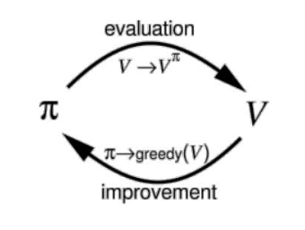
This indicates that policy iteration consists of two procedure. \(1^{st}\) Policy evaluation and \(2^{nd}\) Policy Improvement. The process is as follows:
1- Initialize a Random policy.
2- Evelate the initialized policy till values are converged. (Policy Evaluation)
3- Use the calculated values in step 2, to improve the policy.
- Repeat steps 2 and 3 untill the policy remains unchanged or in other words, the optimal policy is acquired.
Policy Evaluation
We somehow explaned policy evaluation in previous sections, it's just calculating state values, given a certain policy. Let's have a numerical example:
SWF Environment Intrudoction
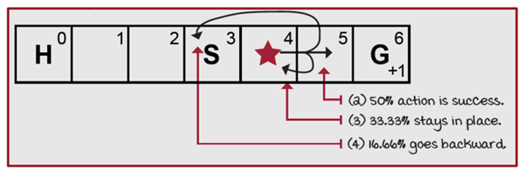
That's a very typical Environment for classic RL. Agent can take only Left and Rightward actions at each state and as it's shown in the picture, with 50 percent chance the intended action is done successfully, with 33.33 percent agent stays where ir was and with 16.66 percent it goes backward. the agent receive a (+1) reward only when reaches the goal.
The random policy We are going to take is :

Which actually is the worst policy for our case.
One question, without doing any calculation, judjing by the look, Which state value gets updated first? and why?
The answer is State 5! but why? It's the ony state thet receive reward at the first place.
now let's do some calculation.
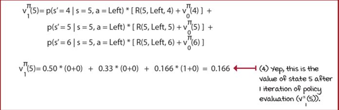
Now for State 4 in iteration 1:
\(𝑉(4)=𝑃(𝑠^′=3,𝑎=𝐿)[𝑟+𝑉(3)]+𝑃(𝑠^′=4,𝑎=𝐿)[𝑟+𝑉(4)] + 𝑃(𝑠^′=5,𝑎=𝐿)[𝑟+𝑉(5)]\)
\(𝑉(4)=0.5[𝑟+0]+0.3333[0+0]+0.1666[0+0]=0.0\)
And after 104 iterations we finally reach the convergence:

Looking at the Values table you notice that state 0 and 6 are not updated through the whole process!! Why?
Because they are terminal states, meaning that being spawned at them or moving to them, ends the epiosde, so there is no next state (no reward, no next state value) for them to updete their vlaues.
Now that we have finished the first step of value iteration, it's Policy Improvement's turn. How do we do that? Take the action that makes the Q(s,a) the maximum:
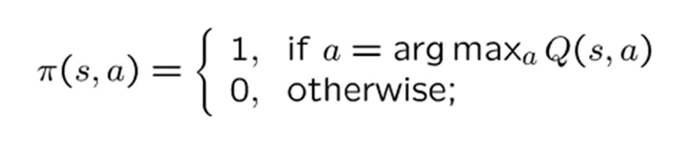
But so for we only calulated values (V) not Q!! what should we do? there are 2 soloutions.
1- Start over, use Q bellman Eqaution to Recalculate Q and wast your time.
2- or use this equation that we discussed eariler: \(Q^𝜋 (𝑠,a)=\sum_{𝑠'}𝑃(𝑠' |𝑠,𝑎)[𝑅(𝑠,𝑎,𝑠^′ )+\gamma \cdot v(𝑠^′)]\) by using this equation you can calculate the Q(s,a) from optimal V(s).
\(𝑄(𝑠=5,𝑎=𝑅)=𝑃_{56}^𝑅 (𝑟+𝑉(6))+𝑃_{54}^𝑅( 𝑟+𝑉(4))+𝑃_{55}^𝑅 (𝑟+𝑉(5)) =\) \(0.5(1+0)+0.1666(0+0.1099)+0.3333(0+0.3324)= 0.6290\)
\(𝑄(𝑠=5,𝑎=𝐿)=𝑃_{56}^L (𝑟+𝑉(6))+𝑃_{54}^L( 𝑟+𝑉(4))+𝑃_{55}^L (𝑟+𝑉(5))=\) \(0.1666(1+0) + 0.5(0+0.1099)+0.3333(0+0.3324)= 0.3322\)
\(𝑄(𝑠=4,𝑎=𝑅)=𝑃_{45}^𝑅(𝑟+𝑉(5))+𝑃_{44}^𝑅 (𝑟+𝑉(4))+𝑃_{43}^𝑅 (𝑟+𝑉(3))=\) \(0.5(0+0.3324)+0.3333(0+0.1099)+0.1666(0+0.0357)= 0.2088\)
\(𝑄(𝑠=4,𝑎=L)=𝑃_{45}^L(𝑟+𝑉(5))+𝑃_{44}^L (𝑟+𝑉(4))+𝑃_{43}^L (𝑟+𝑉(3))=\) \(0.1666(0+0.3324)+0.3333(0+0.1099)+0.5(0+0.0357)= 0.1099\)
Just like that you can calculate the Q(s,a), after that go back to step 2 and repeat the same procedure till reaching the convergence in policy.
Generalized Policy Iteration
So far, we've discussed policy iteration. Now, let's talk about generalized policy iteration (GPI). What is it? Simply put, GPI states that all RL algorithms inherently involve policy iteration. They all have some form of policy evaluation, though the way they evaluate the policy may vary. Likewise, after evaluation, they all perform policy improvement in some way.
Value Iteration
-
There was a huge problem with Policy iteration. it takes too long for values to converge, and only after that you are able to update your policy. So we use value iteration.
-
In value iteration we don't wait for values to converge, instead we update the policy after each iteration.
Let's get started. Assume the same SWF world with the same initialized random policy and set all V(s) = 0.
\(𝑄(𝑠=5,𝑎=𝑅)=𝑃_{56}^𝑅 (𝑟+𝑉(6))+𝑃_{54}^𝑅(𝑟+𝑉(4))+𝑃_{55}^𝑅 (𝑟+𝑉(5)) =\) \(0.5(1+0)+0.1666(0+0)+0.3333(0+0)= 0.5\)
\(𝑄(𝑠=5,𝑎=𝐿)=𝑃_{56}^L (𝑟+𝑉(6))+𝑃_{54}^L(𝑟+𝑉(4))+𝑃_{55}^L (𝑟+𝑉(5))=\) \(0.1666(1+0) + 0.5(0+0)+0.3333(0+0) = 0.1666 ≅ 0.17\)
The other Q values remain Zero. Now update the Policy using the same method for policy improvement!!!
\(Argmax_a(𝑄(𝑠=5,𝑎=𝑅),𝑄(𝑠=5,𝑎=L)) = (a = R)\) Since other values remain unchanged we leave them we the initial Policy.
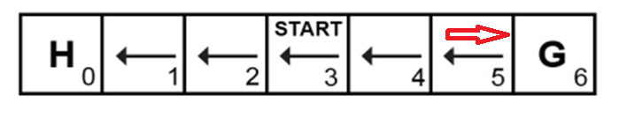
For the second iteration first calculate the new values.
\(𝑉(5)=𝑃(𝑠^′=6,𝑎=𝑅)[𝑟+𝑉(6)] + 𝑃(𝑠^′=5,𝑎=𝑅)[𝑟+𝑉(5)] + 𝑃(𝑠^′=4,𝑎=𝑅)[𝑟+𝑉(4)]\) \(𝑉(5)=0.5[1+0] + 0.3333[0+0] + 0.1666[0+0]=0.5\)
\(𝑉(4)=𝑃(𝑠^′=5,𝑎=𝐿)[𝑟+𝑉(5)] + 𝑃(𝑠^′=4,𝑎=𝐿)[𝑟+𝑉(4)] + 𝑃(𝑠^′=3,𝑎=𝐿)[𝑟+𝑉(3)]\) \(𝑉(4)=0.5[0+0] + 0.3333[0+0] + 0.1666[0+0] = 0.0\)
The other values remain zero like V(4).
Now calculate the Q values based on new values.
\(𝑄(𝑠=5,𝑎=𝑅)=𝑃_{56}^𝑅 (𝑟+𝑉(6))+𝑃_{55}^𝑅 (𝑟+𝑉(5))+𝑃_{54}^𝑅 (𝑟+𝑉(4))=\) \(0.5(1+0)+0.3333(0+0.5)+0.1666(0+0) = 0.6665 ≅ 0.67\)
\(𝑄(𝑠=5,𝑎=𝑅)=𝑃_{56}^L (𝑟+𝑉(6))+𝑃_{54}^L (𝑟+𝑉(4))+𝑃_{55}^L (𝑟+𝑉(5))=\) \(0.1666(1+0)+0.5(0+0)+0.3333(0+0.5)= 0.3333 ≅0.33\)
\(𝑄(𝑠=4,𝑎=𝑅)=𝑃_{45}^𝑅 (𝑟+𝑉(5))+𝑃_{44}^𝑅 (𝑟+𝑉(4))+𝑃_{43}^𝑅 (𝑟+𝑉(3))=\) \(0.5( 0+0.5)+0.3333(0+0)+0.1666(0+0)=0.25\)
\(𝑄(𝑠=4,𝑎=𝐿)=𝑃_{45}^𝐿 (𝑟+𝑉(5))+𝑃_{44}^𝐿 (𝑟+𝑉(4))+𝑃_{43}^𝐿 (𝑟+𝑉(3))=\) \(0.1666(0+0.5)+0.3333 (0+0)+0.3333(0+0)= 0.0833 ≅ 0.08\) The other Q values remain Zero.
Now Again, Policy Imrovement:
- \(Argmax_a(𝑄(𝑠=5,𝑎=𝑅),𝑄(𝑠=5,𝑎=L)) = (a = R)\)
- \(Argmax_a(𝑄(𝑠=4,𝑎=𝑅),𝑄(𝑠=4,𝑎=L)) = (a = R)\)
The new policy looks like:
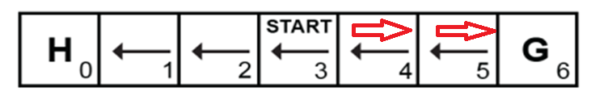
Notice that:
- in value iteration there is no need to reach the optimal Value to update the policy.
- You can update the policy with each iteration
By repeating this loop after 122 iteration we finally convergence:

Exploration vs Exploitation
Assume you're walking school to your house. there is one hour long path that you take everyday. suddenly you decide to take a new path to shorten the walkong duration. you don't know about the new path, is it faster? is it safe? you even may get lost. this is a risk. it can raise you high up or break you.
this is the concept of Exploration vs Exploitation!! when you take the usual path it's Exploitation, meaning you're using your current knowledge, that same old policy that wrks, but taking the new path is Exploration, you're trying to find new things.
E-Soft Policy
Does the same thing When dealing with RL problems. Also known as \(\epsilon \text{ } \text{greedy policy}\), 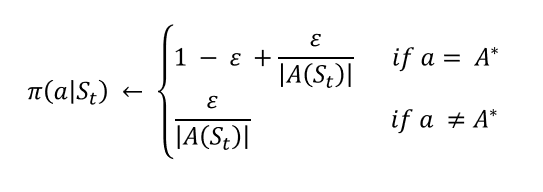
\(\epsilon\) is the value smaller or equal to than 1, it controls the probabilty of which Eploitation is done. usually starts with a large value (close to 1) and over time decreases to a pre-set value (close to 0).
It states that the best action is selected with probability of \(1-\epsilon + \frac{\epsilon}{|A(s_t)|}\) and other actions each have tha chance of \(\frac{\epsilon}{|A(s_t)|}\) to be selected. \(|A(s_t)|\) is the number of actions in the action space.
Example: If \(\epsilon = 0.1\) and \(|A(s_t)| = 4\) thus \(1-\epsilon + \frac{\epsilon}{|A(s_t)|} = 1 - 0.1 + \frac{0.1}{4} = 0.925\) with probability of 0.925 We choose the best action and other 3 actions each have 0.025 chance to be selected.
\(\epsilon \text{ } \text{greedy}\) is a simpler form of the \(\epsilon \text{ } \text{Soft policy}\):
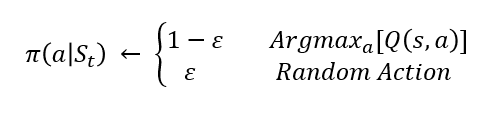
In this form with the chance of \(\epsilon\) we choose a randome action (all actions can be taken) and with the chance of \(1 - \epsilon\) we choose the best action.
ON Policy & OFF Policy
An algorithm is off-policy if it updates its policy using data collected from a different policy, rather than the one being improved. it means that we have two set of policies. one which is called behavior policy, is used to gather date from the environment. and the target policy is the one getting improved by this data.
An On policy algorithm uses the same policy that is being improved to gather data. Further explanation will be done in next sections.
Sampling Methods
Prior to this section, We utilized our methods in environments that we knew their everything about them. and by everything I mean: transition functions or in another words we knew how does their stochasticity work.
But in reallity we don't know them! thus we can't calculate values which means we can't improve policies. as a result we utilize sampling methods which gather data from the environment and use them to estimate the values.
Monte Carlo
Monte Carlo is one of these methods. How does it work? basically agent is initialized somewhere in the environment and starts exploring the world and gathering these data: \((s_0,a_0,r_0,s_1,a_1,r_1,s_2,...,s_{T-1},a_{T-1},r_{T-1},s_T)\) Then using these data we Estimate Values, Remember the Value function formula:
We shall Estimate this function By taking the mean of the returns:
\(V(s_t) = \sum_{t'=t}^T r_t/N(s_t)\) Where \(N(s_t)\) is the number of episodes that \(s_t\) has been visited in them.
Okay now let's have an example:

In this example which includes two episodes the Agent starts from State 12 and reaches the Goal. We Want to calculate the Value of state 12. in the left episode the agent receive a -10 by stepping into the state 21 and receive a +10 by reaching the state 23 which is our goal.
\(R(\tau_1) = -10 + 10 = 0\)
and in the right one, agent only receive a +10 by reaching the state 23 which is our goal. so
\(R(\tau_2) = 10\)
Also let's consider another episode:
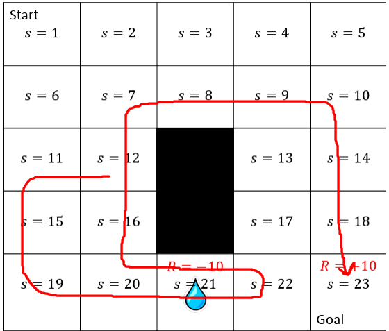
In this onr the agent has stepped into state 12 twice, and we should calculate its Return. There are two ways to do that.
First Visit Monte Carlo
first, count the state 12 just once:
\(R(\tau_3) = - 10 - 10 + 10 = -10\)
So \(N(s_t = 12) = 3\) and \(V(s_t = 12) = \frac{R(\tau_1) + R(\tau_2) + R(\tau_3)}{N(s_t = 12)} =\frac{0 + 10 - 10}{3} = 0\)
This way of calculating the value is called [First Visit Monte Carlo]. meaning we only charge the agent for the visited states once.
Every Visit Monte Carlo
But there is another way too, we charge the agent each time visits a state. in this case for episode 3:
\(R(\tau_3) = -10 - 10 + 10 = -10\) and \(R(\tau_4) = +10\). as an explanation, agent starts at state 12 goes to state 21, steps into 22 and gets back to 12 then countinues its path to the goal.
this is the \(\tau_3\) and we charged the agent because of the first time.it visited the state 12. also as stated, agent gets back to the state 12, so this the second time it's visiting state 12 so we charge it again. which only recives a +10 reward in its path. so \(R(\tau_4) = +10\)
thus So \(N(s_t = 12) = 4\) and \(V(s_t = 12) = \frac{R(\tau_1) + R(\tau_2) + R(\tau_3) + R(\tau_4)}{N(s_t = 12)} =\frac{0 + 10 - 10 + 10}{4} = 2.5\)
This way of calculating the value is called [Every Visit Monte Carlo].
Incremental Mean
We all know the usual way to calculate mean of numbers, but in our case, keeping the track of them in a loop, for multiple states is not really an efficent way. so we introduce Incremental Mean.
\(Mean^{new} = Mean^{old} + Step Size[New Estimated Value - Mean^{old}]\)
Here StepSize is like a learning rate, it controls the effect of the new Estimated value
Countiue to Monte Carlo
So now we want to calculate the Value using incremental mean. we rewrite the incremental mean for value like this:
\(Value(s_t)^{new} = Value(s_t)^{old} + Step Size[G_t - V(s_t)^{old}]\)
Monte Carlo Control-First visit Pseudocode
The process of estimating the (Q or V) is called Monte Carlo Prediction. The full Procedure that helps us to have a better policy is Monte Carlo control.
Monte Carlo Control-First visit 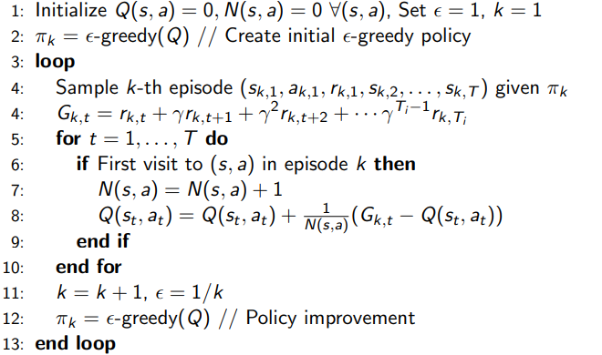
As you can see after Estimating the New Values The \(\epsilon \text{ } \text{greedy}\) is used to improve the policy and collect better data in the next episode. Since the policy Generating the Episode and the policy that is being improved, both are \(\epsilon \text{ } \text{greedy}\) this is an ON policy MC.
Sampling and Bootstrapping
If you take a close look at Monte Carlo example, you find out, that to calulate the values I needed to finish the episode. this is not quite desired. if there was a way to calculate the the Value without the need to finish the episode, that would have been great. So now we meet Bootstrapping
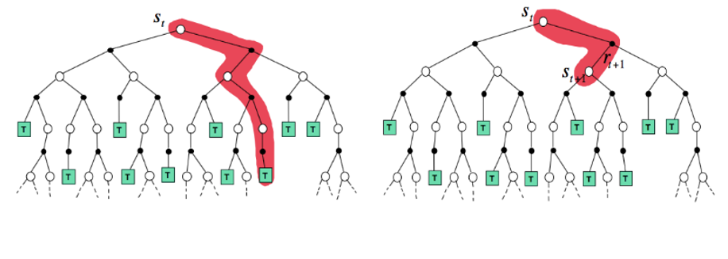
In this image the left one is like Mone Carlo, Starts in an initial state and we keep track of it,till reaches the end. but the right one is Bootstrapping, as I said in Bootstrapping we don't wait till the end. in this case we calculate the new value, the moment we receive the new reward and went to a new state. with this Introduction, I'am going to introduce you two Bootstrapping methods:
-
SARSA
-
Q Learning
SARSA and Q Learning are a subsections of Temporal Difference Learning method(TD Learning Method). as It's called TD Learning, We introduce two key Equations for TD Learning:
TD Target
- \(\text{TD Target} = r_{t+1} + \gamma \cdot V(s_{t+1})\)
This equation is basically the new value estimation for \(V(s_{t})\) which in Monte Carlo was Estimated by \(G_t\)
TD ERROR
- \(\text{TD Error} = \text{TD Target} - V(s_t)^{old}\) This is the error we aim to minimize it, the correct minimization of this means that we have reached a right estimation of the values.
Value update formula for TD:
Update Formula
\(V(s_t)^{new} = V(s_t)^{old} + StepSize[\text{TD Target} - V(s_t)^{old}]\)
TD Pseudocode
As mentioned in TD Learning we use Bootstrapping. the following Pseudocode explanes how we update the Values in a loop.

SARSA
As I said earlier knowing the Values, alone doesn't help. we need Q values to have a better undrestnding of the policy!! in SARSA we calculate Qs instead od Vs.
so form of the previously mentioned equations will change a little bit.
-
\(\text{TD Target}_{SARSA} = r_{t+1} + \gamma \cdot Q(s_{t+1},a_{t+1})\)
-
\(\text{TD Error}_{SARSA} = \text{TD Target}_{SARSA} - Q(s_t,a_t)^{old}\)
-
\(Q(s_t,a_t)^{new} =Q(s_t,a_t)^{old} + StepSize[\text{TD Target}_{SARSA} - Q(s_t,a_t)^{old}]\)
SARSA Pseudocode
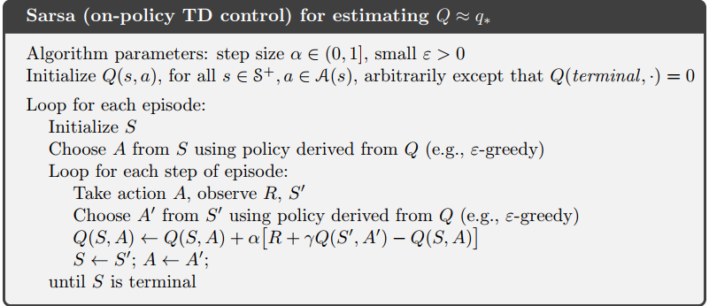
Notice that SARSA uses \(\epsilon \text{ } \text{greedy policy}\) both in taking actions and updating the Q values. this means that SARSA is an on policy method. since the policy gathering data and the policy, being improved are both \(\epsilon \text{ } \text{greedy}\)
Q Learning
Q Learning is Quite like SARSA with a little difference: it has a max term in TD Target.
-
\(\text{TD Target}_{Q Learning} = r_{t+1} + \gamma \cdot max_a[Q(s_{t+1},a_{t+1})]\)
-
\(\text{TD Error}_{Q Learning} = \text{TD Target}_{Q Learning} - Q(s_t,a_t)^{old}\)
-
\(Q(s_t,a_t)^{new} =Q(s_t,a_t)^{old} + StepSize[\text{TD Target}_{Q Learning} - Q(s_t,a_t)^{old}]\)
Q Learning Example
Example: Consider this mouse, trying to get cheese and not getting. the Reward function is explaned in the figure. \(StepSize = 0.1\) and \(\gamma = 0.99\)
Now Step by Step We are about to update Q(s,a) using Q learning.
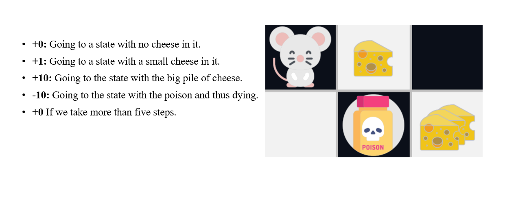
Time Step 1
Step 1: Initialize Q arbitrarily (e.g, Q(s,a) =0 for All \(\in S\) and \(a \in A(s)\) and Q(terminal state,.) = 0)
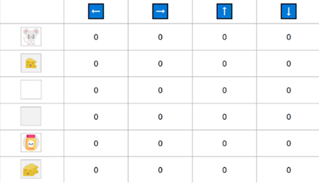
Step 2: Choose and perform an Action from \(\epsilon-greedy\) policy. Assuming that starting \(\epsilon\) is 1, I take a random action to right.
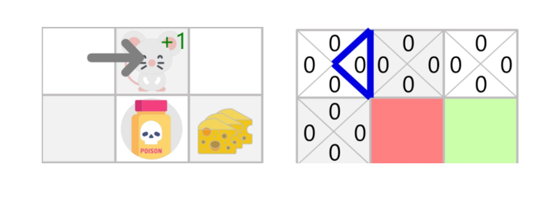
Step 3: Update \(𝑄(s_𝑡, a_𝑡)\)
\(Q(s_t,a_t)^{new} =Q(s_t,a_t)^{old} + StepSize[r_{t+1} + \gamma \cdot max_a[Q(s_{t+1},a_{t+1})] - Q(s_t,a_t)^{old}]\)
\(Q(\text{Initial State, Right}) = 0 + 0.1[1 + 0.99\cdot(0) - 0] = 0.1\)
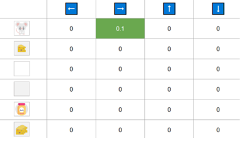
Time Step 2
Step 1: Choose Action and perform. I take a random action again, since epsilon=0.99 is big. (Notice we decay epsilon a little bit because, as the training progress, we want less and less exploration). I took the action Down. This is not a good action since it leads me to the poison.
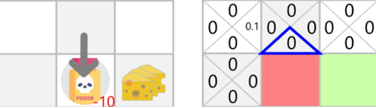
Because I ate poison, I got \(R_{t+1}\)=−10, and I died. \(\rightarrow\) Episode Ended
\(Q(\text{State 2, Right}) = 0 + 0.1[-10 + 0.99\cdot(0) - 0] = -1\)
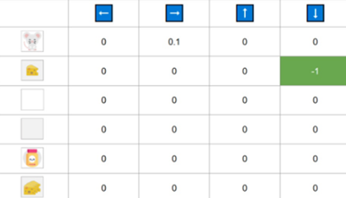
To finally gain converge and Right policy, you should Apply this procedure much more.
Q Learning Pseudocode
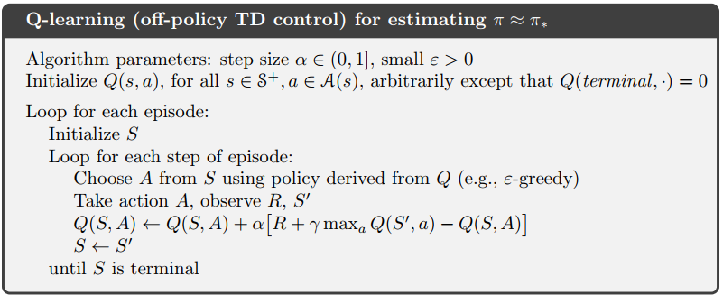
Notice that Q Learning uses \(\epsilon \text{ } \text{greedy policy}\) just in taking actions and when it comes to updating the Q values it's greedy policy. This means Q learning is an off policy method.
A brief Comparison between TD and MC
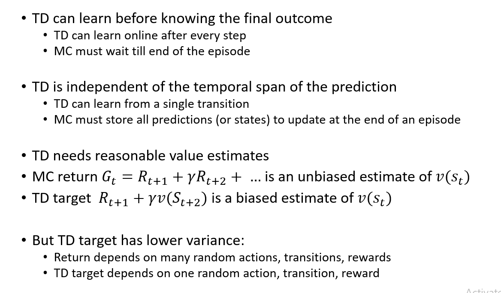
N Step TD Learning
Take a good look at this figure:

Prior to this section We only talked about 1 Step TD, where ONLY TooK ONE Action and recieved Reward, That is known as TD(0). But we can take more steps and gather Explicit Rewards insread of just estimating the next state values. as we increase the taken steps, we move from TD(0) to TD(1), Where TD one is the same as Monte Carlo, meaning it waits till the end of the episode.
So according to this description, we should calculate the N Step Returns.

N Step SARSA Pseudocode
Based this introduction, Now you can undrestand SARSA Pseudocode:

References
- Sutton & Barto Book: Reinforcement Learning
- Robotch Academy: Slides of Reinforcement Learning Course
- Grokking Deep Reinforcement Learning Book
- Hugging Face RL course
Author(s)

Reza GhaderiZadeh
Teaching Assistant